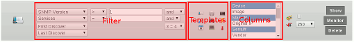

-
-


List Modules
The purpose of "List modules" is to display the contents of their respective tables. The presentation can be highly customized and exported to various formats.

- By default some reports are shown on the bottom of most list modules. The
 setting in User-Profile determines how many entries are shown. Clicking on a text link takes you to the full-featured report.
setting in User-Profile determines how many entries are shown. Clicking on a text link takes you to the full-featured report.
- Click the "Show" button to generate the list. Use the "Columns" select box to add or remove the columns you wish to see (hold down CTRL to select multiple)
- If "List optimize" is selected (next to
 in User-Profile), the columns are persistent for the entire session and a report is shown by default
in User-Profile), the columns are persistent for the entire session and a report is shown by default
- You can use the templates as quick list shortcuts
- Define a criteria and select the combination operators AND/OR to add up to four conditions (first and second pairs are grouped together with brackets)
- Alternatively you can compare 2 columns directly by using the other combination operators (e.g. "1 = 2" with columns "First Discover" and "Last Discover" selected to list devices only found once)
- The last map can be included via
 and a limit can be chosen as well (default is 250)
and a limit can be chosen as well (default is 250)
- The triangles in the header row allow for the list to be sorted accordingly. They're not available on special columns containing realtime data or graphs and other statistics
- You can export lists as XLS by clicking on the spreadsheet icon , if shown in the header
 NeDi Help
NeDi Help